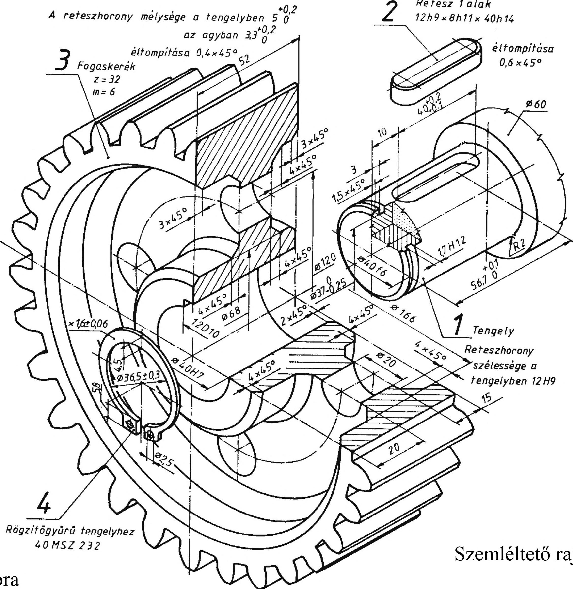

22. Hajtások 33. táblázat Egyenes fogú, elemi fogazató hengereskerék Megnevezés Kiskerék Nagykerék Megjegyzés Osztókörátmérő di = m Z\ d2 = m z2 c* értéke: Fej körátmérő dai = m(zi + 2 ) da2 = m(z2 + 2 ) fésűs késeknél Lábkörátmérő dn = m(zi - 2 - 2c* ) df2 = m(z2 - 2 - 2c* ) - = 0.167 6 Alapkörátmérő db! = m z, cosa db2 = m z2 cosa Közös fogmagasság hw = 2ha = 2m, ahol ha = m lefejtőmarónál Fogvastagság az osztókörön m • 7i S, — S2 — 2 -...2=0,2 ... 0,35 54 Tengelytáv Z1 +z2 a = m •— - — 2 metszőkerekeknél 0,25 ... 0,35 száras metszőkerekeknél 0,1. Áttétel, módosítás . ^hajtó Hí di Z2 Fogszámarány z2 u — — — n hajtott n2 ^2 Z1 Z1 Kiskerék fogszám Zj Nagykerék fog száma Z2 Osztás d • 71 p = m- 71 = z Modul P d m = — = — 71 Z Fej magasság ha = m Lábmagasság hf = ha +c = m ( 1 + c* ) Lábhézag c = m c* Fogmagasság h = ha + hf A reteszhorony mélysége a tengelyben 5 (j Retesz 1 alak 12h9x 8h11 x 40h 14 e l tompítása 0,6x45° Összeállítási rajz 323. ábra Rögzitőgyűrű tengelyhez 4 0 MSZ 232 Szemléltető rajz 99
